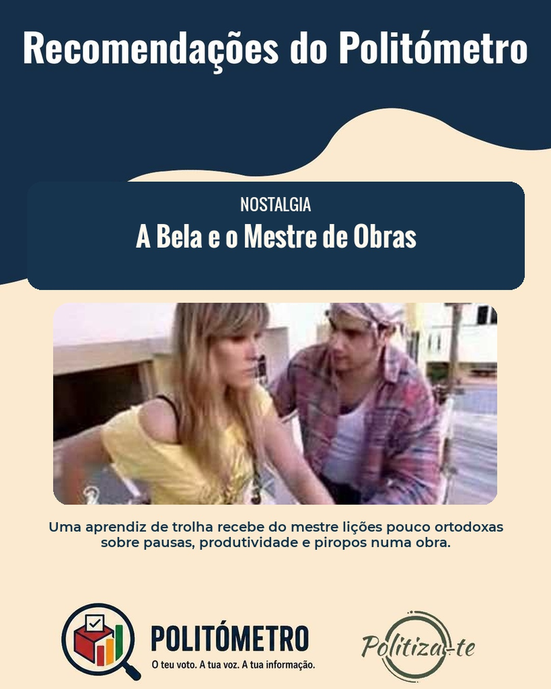
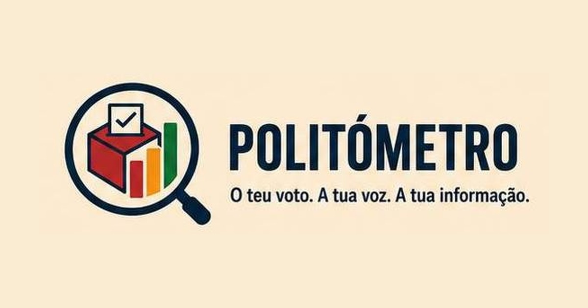
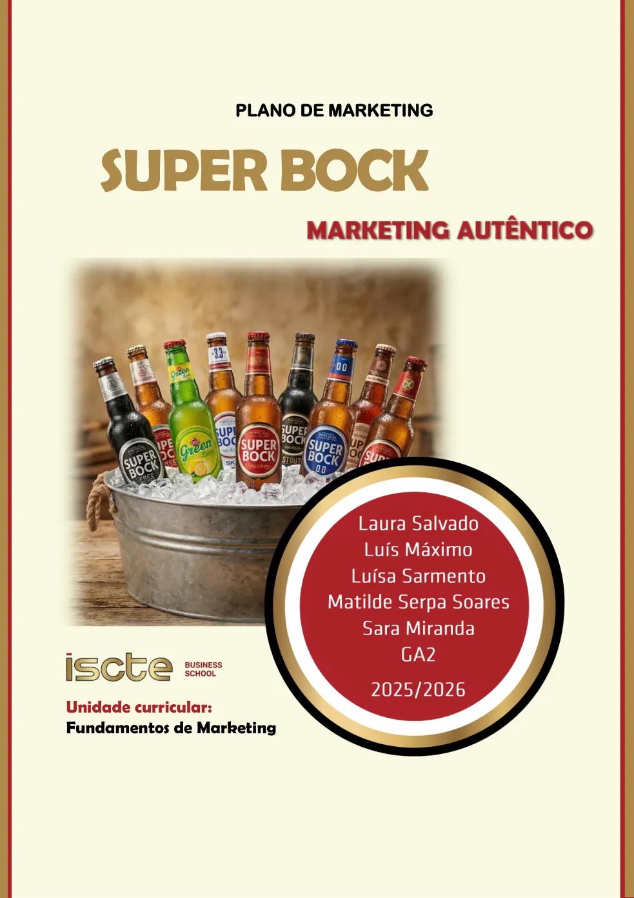

Consciência cívica
Politiza-te
Sessões, conteúdos e ferramentas que aproximam os jovens da política e da democracia.
Conhecer o projetoTrabalhos & iniciativas
Iniciativas de participação cívica, tecnologia e informação, apresentadas numa página própria com contexto, objetivos e ligações.

Consciência cívica
Sessões, conteúdos e ferramentas que aproximam os jovens da política e da democracia.
Conhecer o projeto
Investigação & comunidade
Uma plataforma portuguesa para encontrar participantes adequados para estudos académicos e de mercado.
Conhecer o projeto
Memória & jornalismo
Uma experiência de arquivo que recupera acontecimentos e notícias preservadas no tempo.
Conhecer o projeto
Informação política
Pesquisa e comparação imparcial de propostas políticas a partir de documentos oficiais.
Conhecer o projeto
Fundamentos de Marketing
Mega Caixa Super Bock 100 Anos de Cerveja
Plano de marketing com diagnóstico competitivo, STP, marketing-mix e campanha integrada.
Ver projeto